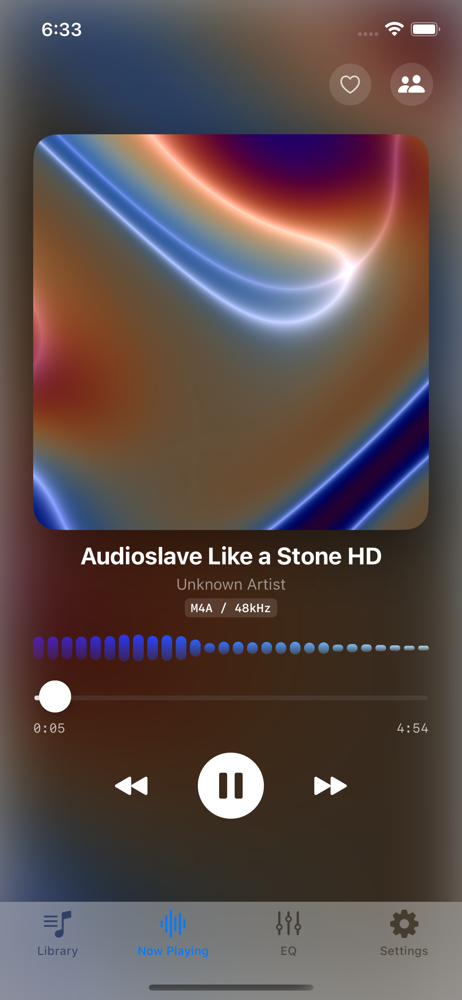
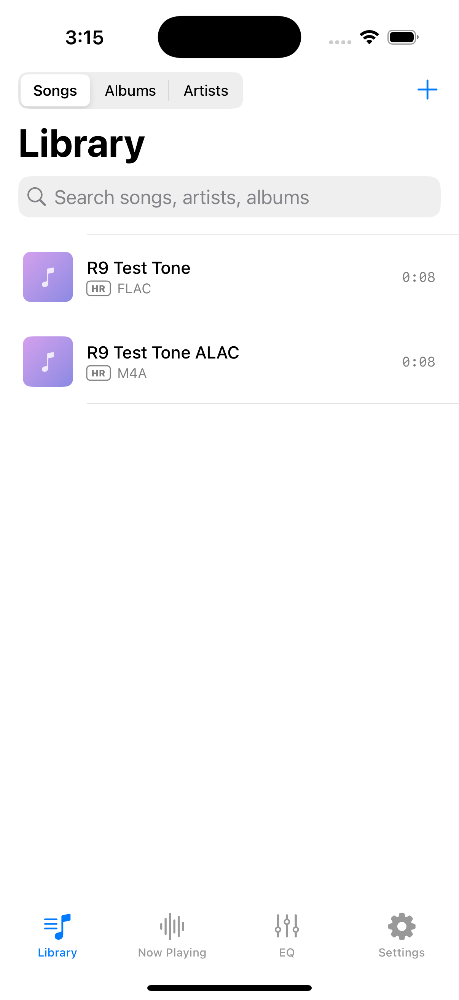

R9 Music
The audiophile player for iPhone & iPad — with the whole R9-EQ engine inside.


🎧 True high-res playback
FLAC, ALAC, WAV, AIFF, MP3, AAC — 24-bit/96 kHz+ stays high-res through the whole pipeline. HR badges show what you're really playing.
🎚 The R9-EQ engine
10-band EQ with 22 tunings, saved profiles, and PRO parametric mode — every band's frequency, Q and filter type editable, Pro-Q style.
🧪 Virtual Driver studio
Build a virtual IEM from stacked driver technologies, or rebuild any of 1,088 real IEMs — and hear it on your music instantly.
🌐 Community song EQs
Share the perfect EQ for a song, auto-load the community's best per track, up-vote favorites — synced with the macOS R9-EQ community.
🌊 Living artwork
Tracks without covers get a unique GPU fluid animation; the visualizer dances in the album's own colors.
🍏 Native to the core
Pure Apple frameworks — AVFoundation, Metal, SwiftUI. Background playback, lock-screen controls, zero telemetry.